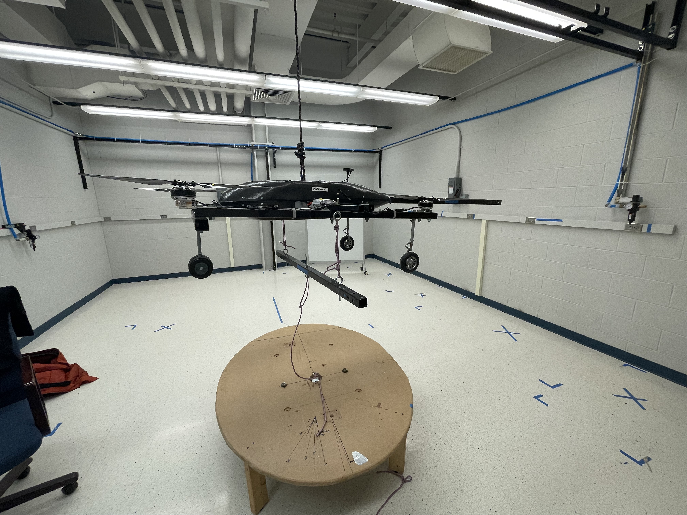
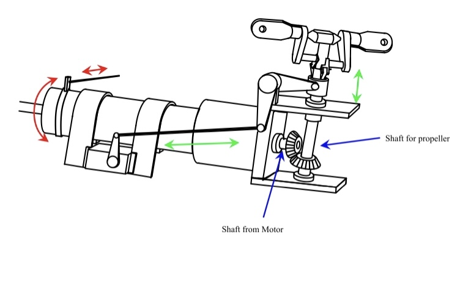
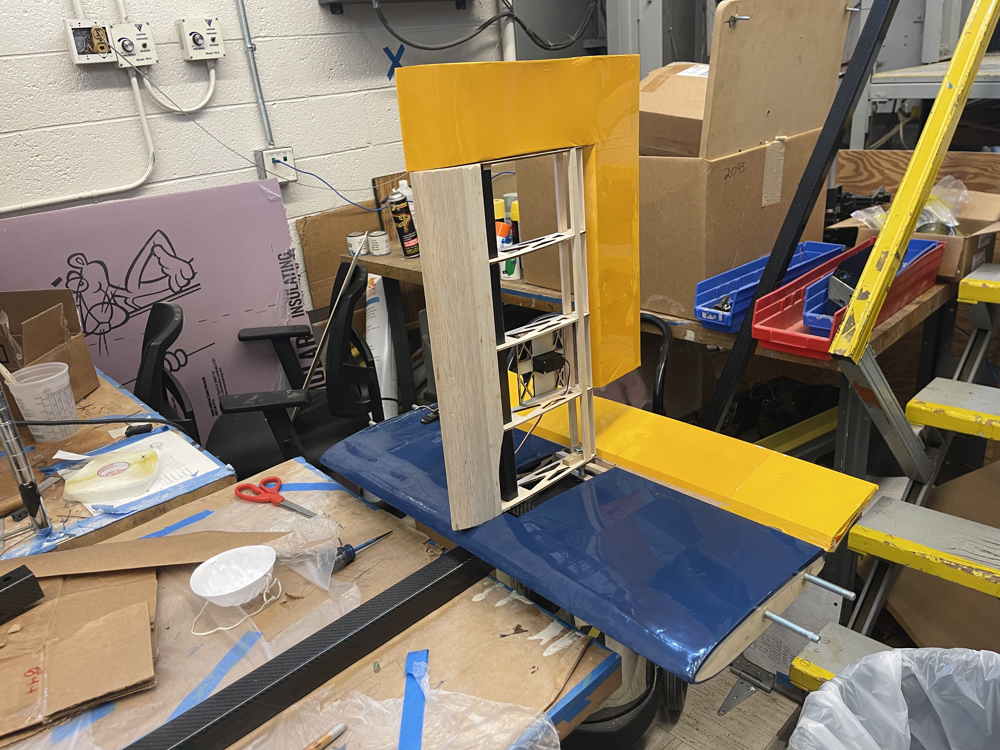
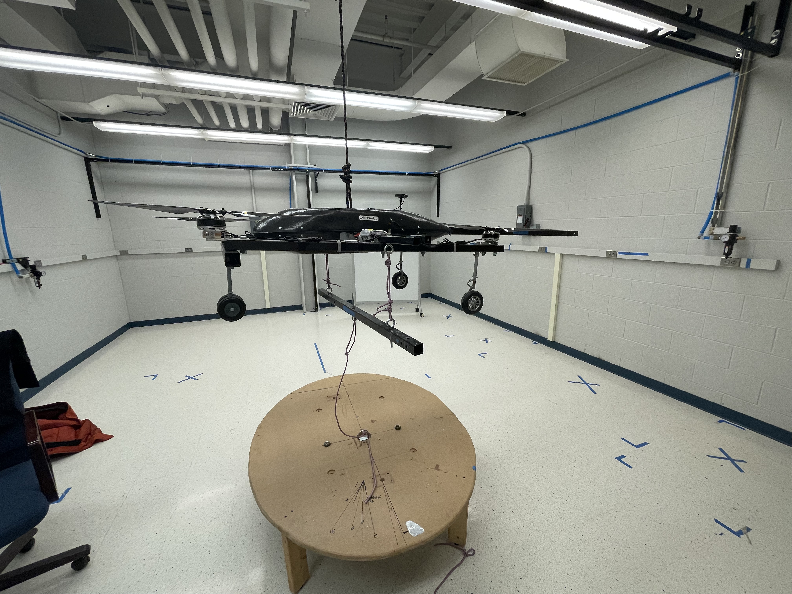
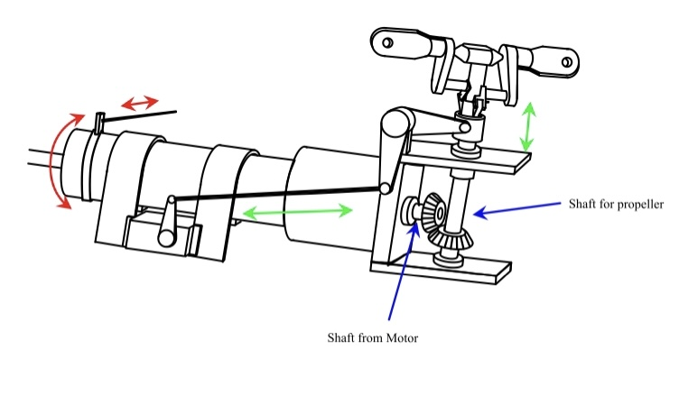
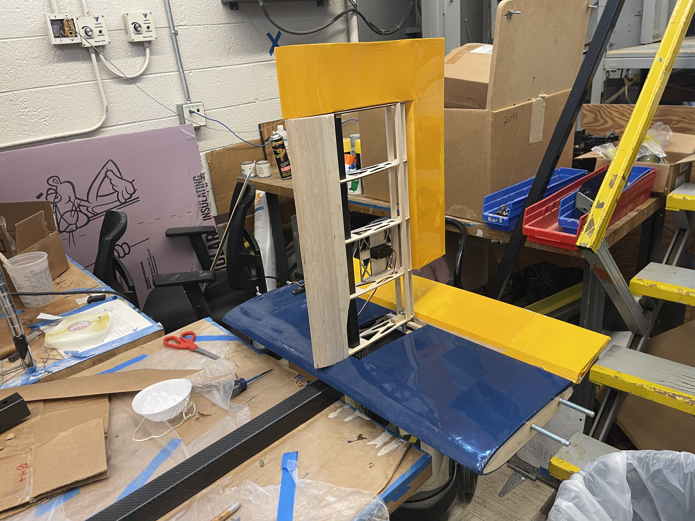
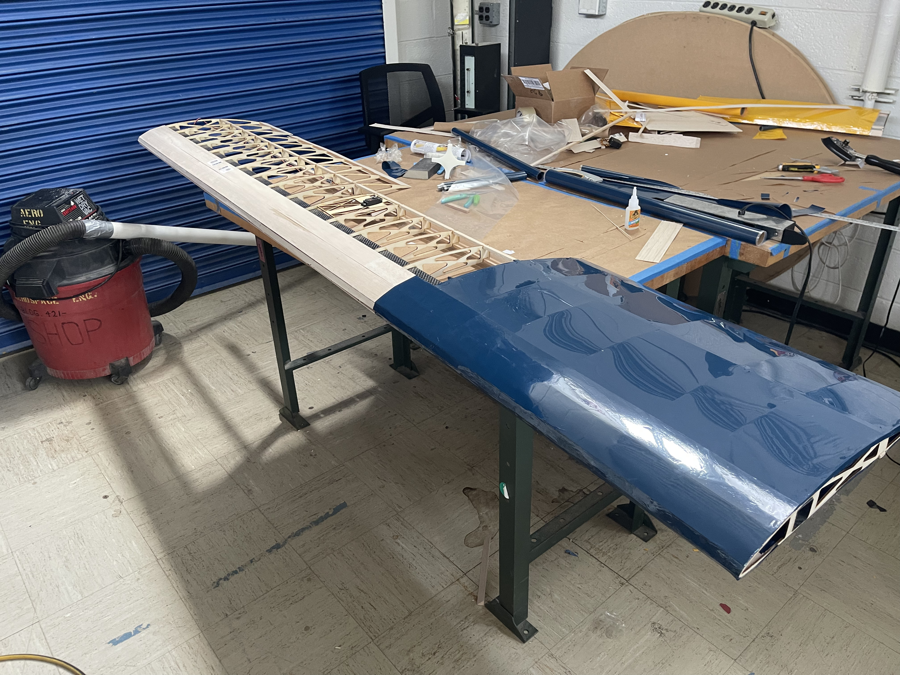
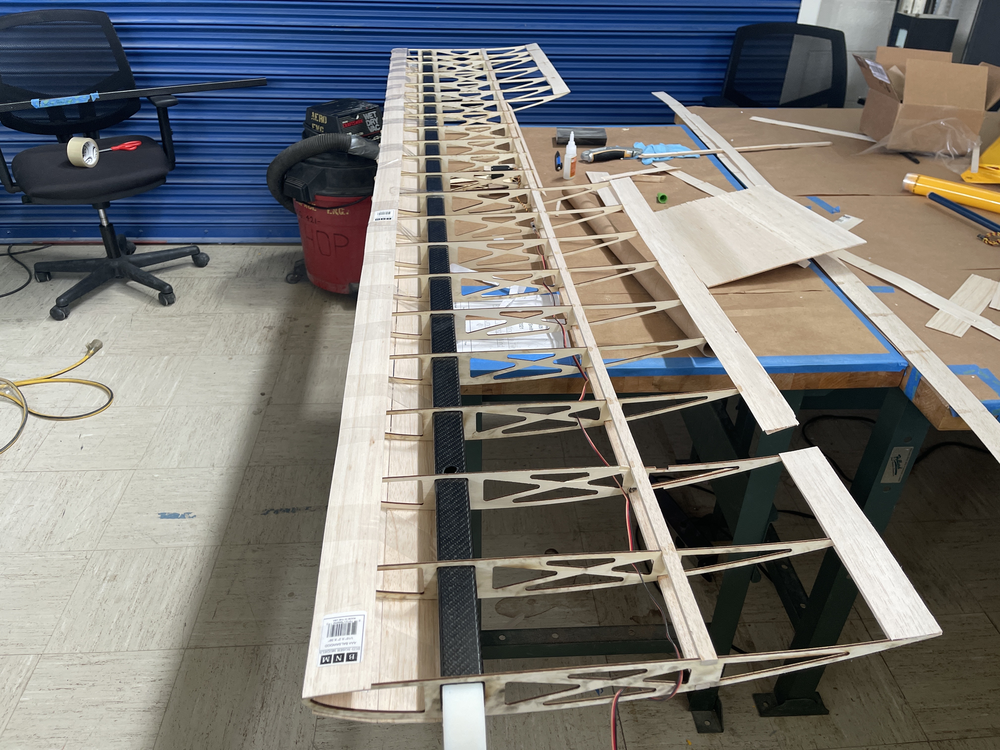
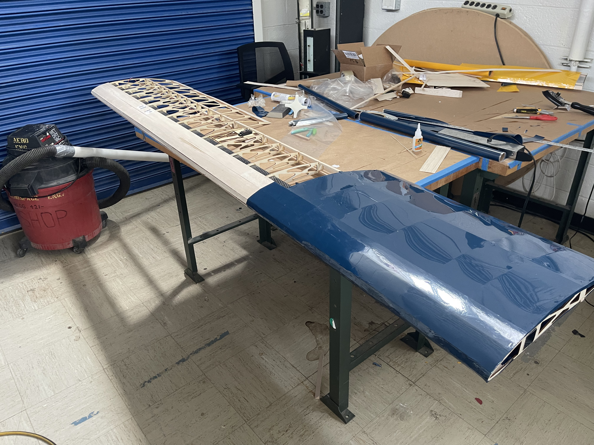
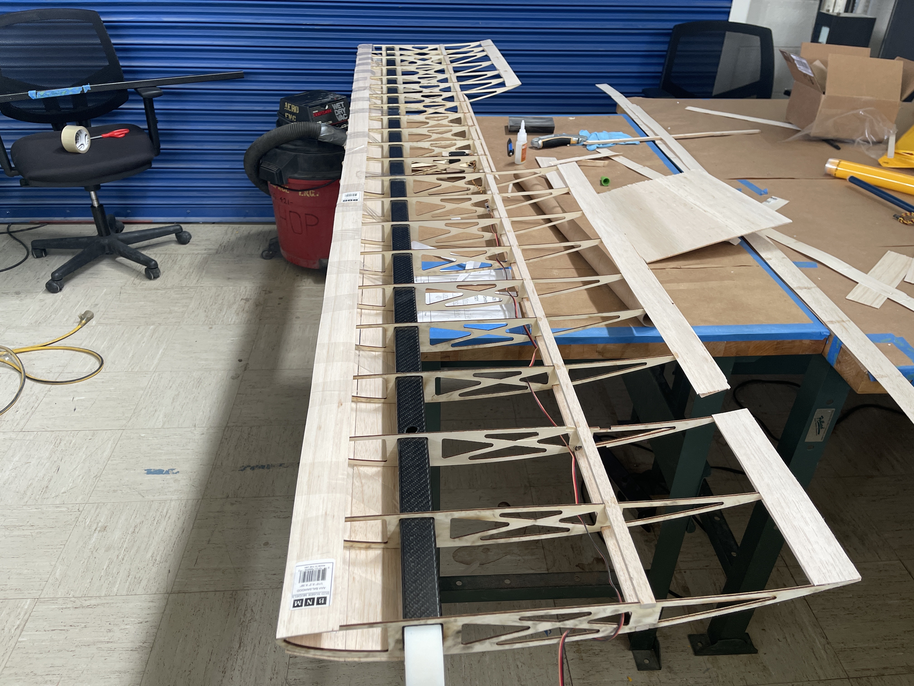

In the summer after Junior year I worked as a research assistant in the Aerospace department at University of Michigan. Based on my past experience with Aeromodelling and Robotics I was appointed as the Lead Engineer on Medical Drone UAV (MDUAV). The goal for the project was to design, build and test a vertical take off and landing (VTOL) aircraft for rapid deployment of medical supplies in remote regions of Ghana. We partnered with KNUST, Ghana to explore sustainable materials for developing the aircraft in order to reduce the aircrafts carbon footprint and reduce costs.
I joined the project during the build phase and immediately made several changes in order to reduce weight of the aircraft while increasing the payload capacity. I led a team of four colleagues to finish the initial prototype of aircraft in 2.5 months. I continued to work on the project in Fall 2021 and Winter 2022 semesters during which we tested various aspects of the aircraft. These included wind tunnel tests of the propellers, tethered tests of the aircraft, etc. We also partnered with BlueFlite, a UAV manufacturer in Michigan, to help improve our design and speed up our manufacturing process.
During the Fall 2021 semester I also supervised a team of six AERO 405 (Senior Design Course) students who worked on a scaled down variable pitch mechanism for our propellers. The variable pitch mechanism was designed by me in order to overcome the short comings of a fixed pitch propeller which can either be optimised for forward flight or vertical flight, hurting our flight performance in the transition regime. We successfully tested the variable pitch mechanism in early December 2021 and are now working on integrating it onto the aircraft. The aim is to have a fully functional medical drone by May 2022 which can be deployed in Ghana for delivering medical supplies.
I am extremely passionate about this project as it has the potential to save many lives all across the world!


 





 


